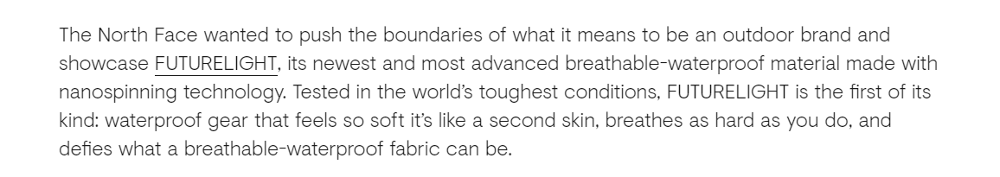

Body

The North Face wanted to push the boundaries of what it means to be an outdoor brand and showcase FUTURELIGHT, its newest and most advanced breathable-waterproof material made with nanospinning technology. Tested in the world’s toughest conditions, FUTURELIGHT is the first of its kind: waterproof gear that feels so soft it’s like a second skin, breathes as hard as you do, and defies what a breathable-waterproof fabric can be.